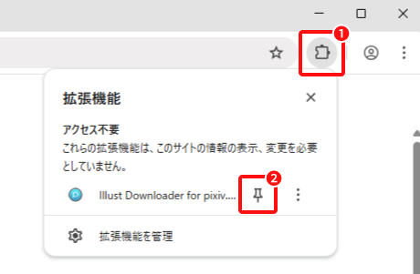

Illust Downloader をインストールいただき、まことにありがとうございます。
一部の機能はブラウザアイコンから実行可能です、拡張機能のアイコンをツールバーにピン留めすると便利です。

❶ ブラウザの拡張機能アイコン（ジグソーパズルのマーク）をクリックします。
※ Google Chrome の場合
❷ ピン留めアイコンをクリックし、Illust Downloader をツールバーに固定します。
作品のダウンロードは、各作品ページに表示されるダウンロードボタンから行えます。
また、より快適にご利用いただくために、最初に Illust Downloader の設定を行うことをおすすめします。